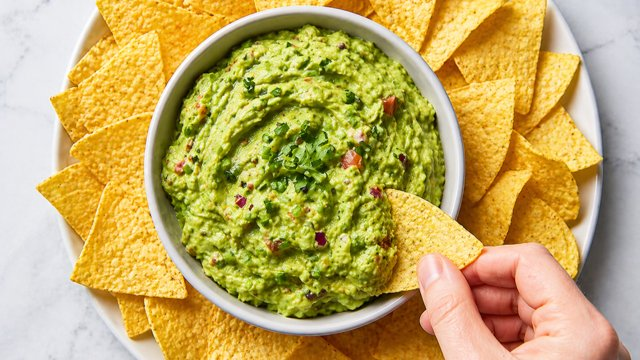
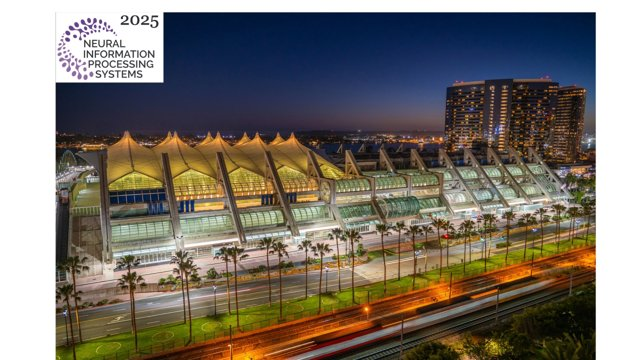
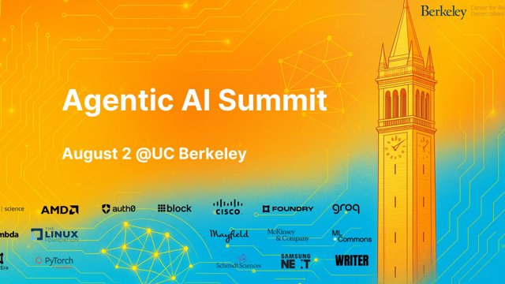
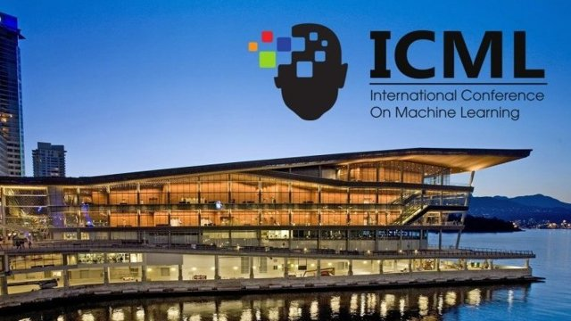

AI makes documents easy to produce. Making them easy to understand still takes work.
Read on LinkedIn ↗One of the biggest concerns I hear today is that AI is making entry-level software engineering obsolete. If AI writes the code, how will junior engineers ever learn? It's a reasonable concern, but I think it's based on the wrong mental model.
Read on LinkedIn ↗
Building AI agents has become easier than ever. Building agents reliable enough to ship is still incredibly hard.
Read on LinkedIn ↗
The venue made it clear that the field is entering a more demanding phase for agentic AI. Progress is no longer gated by isolated model improvements, but by how well learning, exploration, inference, and evaluation work together under interaction, uncertainty, and distribution shift.
Read on LinkedIn ↗
Just wrapped up an energizing event hosted by Berkeley’s RDI, bringing together top minds from academia and industry leaders at OpenAI, Google, Meta, Salesforce, LinkedIn, and others. The sessions dove deep into both the toughest challenges and the most promising directions for Agentic AI.
Read on LinkedIn ↗
I had the privilege of being part of this vibrant community at ICML 2025. The energy around structured reasoning, agent interfaces, and scalable alignment was unmistakable.
Read on LinkedIn ↗